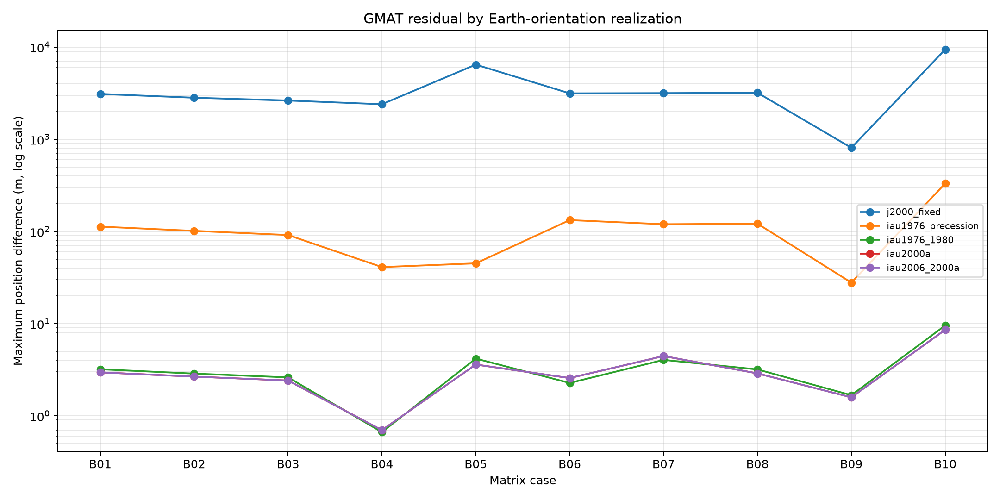
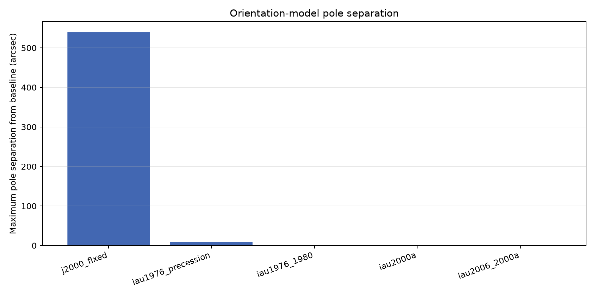

Experiment: EXP-EARTH-ORIENTATION-1C-001
Status: diagnostic completed
Decision: baseline_retained_no_candidate_met_preregistered_rule
Recommended model: iau1976_1980
| Model | Role | Median position m | Worst position m | Median velocity mm/s | Worst velocity mm/s | Median position ratio | Rule passed |
|---|---|---|---|---|---|---|---|
| j2000_fixed | ablation_static_axis | 3133.39 | 9460.57 | 3624.46 | 10599.7 | 1033.4517 | no |
| iau1976_precession | ablation_precession_without_nutation | 107.27 | 332.183 | 116.285 | 376.049 | 35.3797 | no |
| iau1976_1980 | closed_1b_validation_baseline | 3.03197 | 9.57698 | 3.32738 | 10.8254 | 1.0000 | no |
| iau2000a | exploratory_modern_orientation_candidate | 2.77753 | 8.59517 | 3.08117 | 9.70739 | 0.9161 | no |
| iau2006_2000a | exploratory_modern_orientation_candidate | 2.77591 | 8.58781 | 3.08125 | 9.69901 | 0.9155 | no |
Alternative models are evaluated on the same evidence used for diagnosis. A selected candidate would require a new independent validation run before replacing the closed 1B baseline.
Fixed and precession-only models are ablations, not replacement candidates. Polar motion and observed EOP corrections are not included in this diagnostic.

